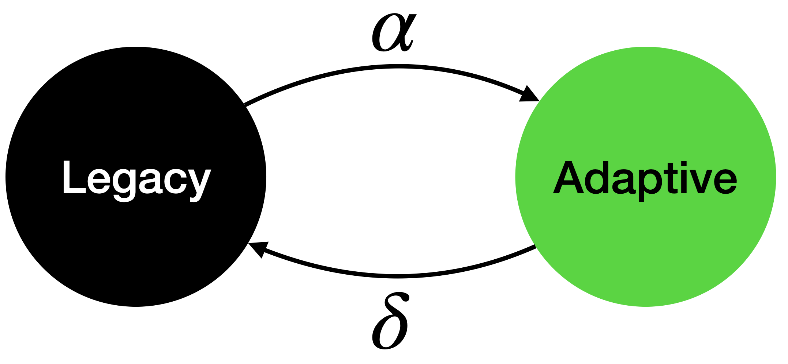

Diffusion of adaptations via social learning
Part I: the Legacy-Adaptive and Legacy-Adaptive-Legacy contagion models
Review: motivated by Ostrom’s design principles for sustainable socio-economic systems
Ostrom’s design principles for sustainable socio-ecological systems
- Elinor Ostrom led development of social-ecological systems theory, which identified design principles to sustainably manage common-pool resources like clean water or healthy forests; all the common-pool resources together are called the commons.
- First woman to win a Nobel prize in economics (2009)
Select design principles (8 total; see Cox, Arnold, and Tomás (2010) reading for an overview):
- Rules should fit local circumstances
- Participation of all stakeholders is vital
- Management of the commons must be organized across social and institutional scales
- All levels of social hierarchy must be recognized and free to organize
- Conflict resolution should be easily accessible
Ostrom’s work elevated Indigenous adaptation
Traditional, Indigenous adaptations for a changing climate are often outperform alternative technological innovations (Piggott-McKellar et al. 2020; McNamara et al. 2020).

Plan for today
How useful practices propagate through populations
- Social learning, breifly
- The Legacy-Adaptive (LA) and Legacy-Adaptive-Legacy (LAL) models of diffusion via “contagion”
- Begin with deriving them with deterministic equations
- Then with stochastic, generative models
- Social networks structure social learning: who learns from whom
Beyond today
- More network constructions: small-world and scale-free networks
- Success-biased social learning and other social learning strategies
- How certain social networks may boost both innovation and inequality
- Analysis of group structure and its effect on the diffusion of adaptations
- Cooperation and coordination
- Social influence and opinion dynamics: beliefs as particles
Legacy-Adaptive (LA) and Legacy-Adaptive-Legacy (LAL) models
Legacy-adaptive (LA) model
- Adapted from the susceptible-infected (SI) model of disease transmission, i.e., a model of contagion where something spreads through contact with others.
- Assume that when an observer doing \(L\) (legacy behavior) interacts with someone doing \(A\) (adaptive behavior), there is a probability \(\alpha\) that the observer starts doing \(A\).
- \(\alpha\) is the adoption probability

Why this “legacy-adaptive” dichotomy?
- “The legacy media want to destroy your right to freedom of speech” says Elon Musk
- Musk effectively repurposed the phrase “legacy software”, which indicates old, outdated software that will one day be abandoned
- It may be helpful to harness this phrase to the same effect as Musk does, but as a label for unsustainable behaviors
- It can be important to contest certain concepts like “legacy” to restrain others from defining how useful terms can be used
The adaptation influencer case
- Oftentimes people will eventually adopt a behavior if they observe an “influencer”.
- If we are designing a sustainability intervention, we may want to know how long it will take for everyone who is influenced by an influencer to adopt some behavior
The influencer
Let’s use one of my favorite sustainable behaviors, biking, to illustrate this first model!
The influencer
Initialization: time step \(t=0\); B: biker, N: not biker

- A node or vertex (circles) represents a person
- An edge (arrows) represents a relationship between two people
- Edge arrows indicate the direction of information flow
- Only connected people interact
The influencer
As time progresses (\(t > 0\)) more family members start biking.

The influencer
Time step \(t = T\), the fixation time when all individuals share the same behavior.

Formal influencer model as LA model
At each time step, \(t\), a fraction \(\alpha\) of the population of \(N-A_t\) targeted individuals changes their behavior from \(L\) to \(A\).
Therefore, \[ A_{t+1} = A_t + \alpha (N - A_t) \]
Deterministic influencer model as LA model
\[ A_{t+1} = A_t + \alpha (N - A_t),\quad N=100,~\alpha=0.05,~A_0=5 \]

LA model in a “well-mixed” population
- “Well-mixed” means that all individuals can learn from every other individual
- We also assume that \(N\to\infty\) so that it makes more sense (maybe?) to have model output in terms of “fractional people”
- If we were to draw the social network, every agent would have a line to every other agent indicating ubiquitous bi-directional influence
LA model in a “well-mixed” population
- Unlike the influencer model, individuals are only exposed to \(A\) if a neighbor knows the behavior
- This also means that the rate of diffusion of \(A\) is not constant
LA model in a “well-mixed” population
- Unlike the influencer model, individuals are only exposed to \(A\) if a neighbor knows the behavior
- This also means that the rate of diffusion of \(A\) is not constant
\[ A_{t+1} = A_t + \alpha A_t (1 - \frac{A_t}{N}) \]
Legacy-adaptive-legacy (LAL) model
Legacy-adaptive-legacy (LAL) model
- Adapted from the susceptible-infected-susceptible epidemiology model
- Identical to LA model, except that there is a drop probability \(\delta\) that someone performing \(A\) regresses to again perform \(L\)

Legacy-adaptive-legacy (LAL) model
\[ A_{t+1} = A_t + \alpha A_t (1 - \frac{A_t}{N}) \text{ ...? } \]
Legacy-adaptive-legacy (LAL) model
Need to subtract the fraction of those doing \(A\) who regress to do \(L\)
\[ A_{t+1} = A_t + \alpha A_t (1 - \frac{A_t}{N}) - \delta A_t \]
Will an adaptation spread or go extinct?
Check \(R_0\), the rate of change of \(A_t\) when \(A_t << N\)
What will be the equilibrium value of \(A_t\)?
Set \(A_\infty = A_{t+1} = A_t\)
References
Cox, Michael, Gwen Arnold, and Sergio Villamayor Tomás. 2010. “A review of design principles for community-based natural resource management.” Ecology and Society 15 (4). https://doi.org/10.5751/ES-03704-150438.
McNamara, Karen E., Rachel Clissold, Ross Westoby, Annah E. Piggott-McKellar, Roselyn Kumar, Tahlia Clarke, Frances Namoumou, et al. 2020. “An assessment of community-based adaptation initiatives in the Pacific Islands.” Nature Climate Change 10 (7): 628–39. https://doi.org/10.1038/s41558-020-0813-1.
Piggott-McKellar, Annah E, Patrick D Nunn, Karen E McNamara, and Seci T Sekinini. 2020. “Dam(n) Seawalls: A Case of Climate Change Maladaptation in Fiji.” In Managing Climate Change Adaptation in the Pacific Region, edited by W. Leal Filho, 69–84. Springer. https://doi.org/10.1007/978-3-030-40552-6.